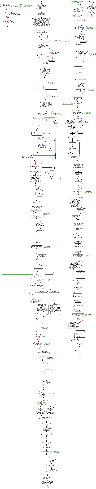

<a href="proc_MartTestTableDataPull2.png"></a>
GO PRINT 'Executing proc_MartTestTableDataPull.sql'; GO IF EXISTS (SELECT * FROM sys.procedures WHERE name = 'proc_MartTestTableDataPull') BEGIN DROP PROCEDURE proc_MartTestTableDataPull; END; GO /************************************************************************************************************** Use KenticoCMS_datamart_2 --Use this to generate TEST commands select 'exec proc_MartTestTableDataPull "KenticoCMS_1","' + table_name + '" , 10, 1' + char(10) + 'GO' as CMD from information_schema.tables where table_name like 'BASE_%' and table_name not like '%_DEL' and table_name not like '%_VerHist' and table_name not like '%_view_%' and table_name not like 'View_%' --Use this to generate TEST commands select * from information_schema.tables where table_name like '%_TESTDATA' **************************************************************************************************************/ CREATE PROCEDURE proc_MartTestTableDataPull ( @InstanceName AS NVARCHAR (250) , @TblName AS NVARCHAR (250) , @NbrRecsToUpdate INT = 2 , @PreviewOnly AS BIT = 0) AS BEGIN -- AUthor: W. Dale Miller -- Contact: wdalemiller@gmail.com -- Date: 03.17.2016 -- Parms: -- @InstanceName - database name -- @TblName - table to test and associated procedures -- @NbrRecsToUpdate- how many records to modify in the test -- @PreviewOnly - Set to 1 to ONLY proint the statements that will execute. -- Use: exec proc_MartTestTableDataPull 'KenticoCMS_1', 'BASE_HFit_HealthAssesmentUserStarted', 100, 1 SET NOCOUNT ON; DECLARE @i AS INT = 0 , @MySql NVARCHAR (MAX) = '' , @TSql NVARCHAR (MAX) = '' , @Fqn NVARCHAR (MAX) = '' , @Type NVARCHAR (50) = '' , @ProcNameInsert NVARCHAR (250) = '' , @ProcNameDel NVARCHAR (250) = '' , @ProcNameApply NVARCHAR (250) = '' , @ExecCTApplySQL NVARCHAR (250) = '' , @SrcTbl NVARCHAR (250) = '' , @VerTbl NVARCHAR (250) = '' , @IdentCol NVARCHAR (250) = '' , @ViewName NVARCHAR (250) = '' , @ColToUpdate NVARCHAR (250) = '' , @TestTblName NVARCHAR (250) = '' , @VerNbr BIGINT = 0 , @ContainsItemID BIT = 0 , @LastModifiedDate AS DATETIME = GETDATE () ; SET @TestTblName = @TblName + '_TESTDATA'; IF @PreviewOnly = 1 BEGIN PRINT 'IF EXISTS (SELECT name FROM sys.tables WHERE name = ''' + @TestTblName + ''')'; PRINT ' drop table ' + @TestTblName; END; ELSE BEGIN IF EXISTS (SELECT name FROM sys.tables WHERE name = @TestTblName) BEGIN SET @MySQl = 'DROP TABLE ' + @TestTblName; EXEC (@MySql) ; END; END; SET @i = (SELECT COUNT (*) FROM information_schema.tables WHERE table_name = 'MART_Tests_Criteria' AND TABLE_TYPE = 'BASE TABLE') ; IF @i = 0 BEGIN CREATE TABLE MART_Tests_Criteria ( ParentName NVARCHAR (250) , TestSql NVARCHAR (MAX) , TestDate DATETIME DEFAULT GETDATE () , RowID INT IDENTITY (1, 1) NOT NULL) ; CREATE UNIQUE CLUSTERED INDEX PKIDX_MART_Tests_Criteria ON MART_Tests_Criteria (ParentName, RowID) ; END; SET @Type = (SELECT TABLE_TYPE FROM information_schema.tables WHERE table_name = @TblName) ; IF @Type IS NULL BEGIN PRINT @TblName + ': DOES NOT EXIST, Aborting.'; RETURN; END; SET @SrcTbl = SUBSTRING (@TblName, 6, 99999) ; SET @Fqn = @InstanceName + '.dbo.' + @SrcTbl; IF @Type = 'BASE TABLE' BEGIN SET @ProcNameApply = 'PROC_' + @TblName + '_' + @InstanceName + '_' + 'ApplyCT'; END; ELSE BEGIN IF @Type = 'VIEW' BEGIN --proc_view_EDW_CoachingDefinition_KenticoCMS_1 --BASE_view_ToDoCoachingEnrollment SET @ViewName = SUBSTRING (@TblName, 6, 999) ; SET @ProcNameApply = 'PROC_' + SUBSTRING (@TblName, 6, 999) + '_' + @InstanceName; END; ELSE BEGIN PRINT @TblName + ', DOES NOT seem to be a table or view, aborting'; RETURN; END; END; SET @ExecCTApplySQL = 'EXEC ' + @ProcNameApply; IF NOT EXISTS (SELECT name FROM sys.procedures WHERE name = @ProcNameApply) BEGIN PRINT 'PROC ' + @ProcNameApply + ', DOES NOT EXISTS, Aborting'; RETURN; END; PRINT '-- USE KenticoCMS_Datamart_2 '; PRINT '--Number of ROWS selected to test: ' + CAST (@NbrRecsToUpdate AS NVARCHAR (50)) ; --** INSERT NEW DATA INTO TEST TABLE SET @MySql = 'select top ' + CAST (@NbrRecsToUpdate AS NVARCHAR (50)) + ' * into ' + @TestTblName + ' from ' + @InstanceName + '.dbo.' + @SrcTbl; IF @PreviewOnly = 0 BEGIN PRINT '-- STEP 1 - INSERT NEW DATA INTO TEST TABLE'; PRINT @MySQl; END; EXEC (@MySql) ; DECLARE @TIdenCol AS TABLE ( ColName NVARCHAR (250)) ; SET @MySql = 'select top 1 column_name from ' + @InstanceName + '.information_schema.KEY_COLUMN_USAGE where table_name = ''' + @SrcTbl + ''''; IF @PreviewONly = 1 BEGIN PRINT '-- STEP 2 - find IDENT col name in PROD table'; PRINT @MySql; END; INSERT INTO @TIdenCol EXEC (@MySql) ; SET @IdentCol = (SELECT TOP 1 ColName FROM @TIdenCol) ; IF @PreviewOnly = 1 BEGIN PRINT '-- STEP 3 - Max Ident COL NAME'; PRINT '-- @IdentCol: ' + @IdentCol; END; IF @Type = 'BASE TABLE' BEGIN SET @ColToUpdate = (SELECT TOP 1 column_name FROM information_Schema.columns WHERE table_name = @TblName AND data_type IN ('char', 'nchar', 'varchar', 'nvarchar')) ; IF EXISTS (SELECT column_name FROM information_Schema.columns WHERE table_name = @TblName AND column_name = 'ItemiD') BEGIN SET @ContainsItemID = 1; SET @MySql = 'Update ' + @InstanceName + '.dbo.' + @SrcTbl + ' set ' + @ColToUpdate + ' = upper(' + @ColToUpdate + ') where ItemId in (select top ' + CAST (@NbrRecsToUpdate AS NVARCHAR (50)) + ' ItemID from ' + @InstanceName + '.dbo.' + @SrcTbl + ') '; END; ELSE BEGIN IF @IdentCol IS NOT NULL BEGIN SET @ContainsItemID = 0; SET @MySql = 'Update ' + @InstanceName + '.dbo.' + @SrcTbl + ' set ' + @ColToUpdate + ' = upper(' + @ColToUpdate + ') where ' + @IdentCol + ' in (select top ' + CAST (@NbrRecsToUpdate AS NVARCHAR (50)) + ' ' + @IdentCol + ' from ' + @InstanceName + '.dbo.' + @SrcTbl + ') '; END; ELSE BEGIN SET @ContainsItemID = 0; SET @MySql = 'Update ' + @InstanceName + '.dbo.' + @SrcTbl + ' set ' + @ColToUpdate + ' = upper(' + @ColToUpdate + ') where ItemId in (select top ' + CAST (@NbrRecsToUpdate AS NVARCHAR (50)) + ' ' + @ColToUpdate + ' from ' + @InstanceName + '.dbo.' + @SrcTbl + ') '; END; END; PRINT '-- STEP 4 - UPDATE THE PROD DATA'; PRINT @MySql; IF @PreviewOnly = 0 BEGIN EXEC (@MySql) ; END; SET @MySql = 'Exec ' + @ProcNameApply; IF @PreviewOnly = 1 BEGIN PRINT '-- STEP 5 - EXECUTE THE PULL PROC'; PRINT @MySql; END; IF @PreviewOnly != 1 BEGIN PRINT '-- STEP 5a - READ THE NEW UPDATES'; EXEC (@MySql) ; PRINT '-- STEP 5b - SAVE the test criteria'; INSERT INTO MART_Tests_Criteria ( ParentName , TestSql , TestDate) VALUES (@TblName, @MySql, GETDATE ()) ; END; --***************************** PERFORM DELETE ***************************** SET @MySql = 'Delete from ' + @fqn + ' where ' + @IdentCol + ' in (select ' + @IdentCol + ' from ' + @TestTblName + ')'; IF @PreviewOnly = 1 BEGIN PRINT '-- STEP 5c - DELETE DATA FROM PROD TABLE '; PRINT @MySql; SET @MySql = 'Exec ' + @ProcNameApply; PRINT @MySql; END; ELSE BEGIN PRINT '-- STEP 5d - READ THE NEW DELETES'; PRINT @MySql; SET @MySql = 'Exec ' + @ProcNameApply; EXEC (@MySql) ; END; --**************************** GET THE LARGET IDENTITY *************************** DECLARE @S1 AS NVARCHAR (MAX) = ''; DECLARE @HiIdentity AS BIGINT = 0; SET @S1 = 'select max(' + @IdentCol + ') from ' + @Fqn; DECLARE @out TABLE ( out INT) ; INSERT INTO @out EXEC (@S1) ; SET @HiIdentity = (SELECT * FROM @out) ; IF @PreviewOnly = 1 BEGIN PRINT '-- STEP 6 - Get the HIGHEST PROD Identity'; PRINT @S1; PRINT '-- @HiIdentity: ' + CAST (@HiIdentity AS NVARCHAR (50)) ; END; SET @HiIdentity = @HiIdentity + 10000; --**************************** REMOVE THE IDENTITY COL *************************** SET @TSql = 'UPDATE ' + @TestTblName + ' SET ' + @IdentCol + ' = NULL '; IF @PreviewOnly = 1 BEGIN PRINT '-- STEP 7 - Remove the identity column'; PRINT 'EXEC proc_RemoveIdentityCols "' + @TestTblName + '"'; PRINT @TSql; END; ELSE BEGIN EXEC proc_RemoveIdentityCols @TestTblName; EXEC (@TSql) ; END; -- SELECT MAX (itemid) FROM KenticoCMS_1.dbo.HFit_UserGoal; SET @TSql = 'ALTER TABLE ' + @TestTblName + ' DROP COLUMN ' + @IdentCol; IF @PreviewOnly = 1 BEGIN PRINT '-- STEP 8 - Remove the identity column'; PRINT @TSql; END; ELSE BEGIN EXEC (@TSql) ; END; SET @TSql = 'ALTER TABLE ' + @TestTblName + ' ADD ' + @IdentCol + ' INT NOT NULL IDENTITY (' + CAST (@HiIdentity AS NVARCHAR (50)) + ', 10) '; IF @PreviewOnly = 1 BEGIN PRINT '-- STEP 9 - ADD NEW identity column values '; PRINT @TSql; END; ELSE BEGIN EXEC (@TSql) ; END; --**************************** GENERATE INSERT DLL *************************** DECLARE @InsertDDL AS NVARCHAR (MAX) ; EXEC proc_genSelectInto @InstanceName, @TestTblName, @SrcTbl, DDL; SET @InsertDDL = (SELECT DDL FROM ##TEMP_InsertDDL) ; --select @InsertDDL IF @PreviewOnly = 1 BEGIN PRINT '-- STEP 10 - Get the INSERT DDL'; PRINT @InsertDDL; IF LEN (@InsertDDL) > 2000 BEGIN SELECT @InsertDDL AS InsertDDL; END; END; --***************************** PERFORM INSERT ***************************** IF @PreviewOnly = 1 BEGIN PRINT '-- STEP 11 - EXECUTE THE INSERT and put the data back into the PROD table'; SET @MySql = 'SET IDENTITY_INSERT ' + @fqn + ' OFF'; PRINT @MySql; PRINT @InsertDDL; SET @MySql = 'SET IDENTITY_INSERT ' + @fqn + ' ON'; PRINT @MySql; SET @MySql = 'Exec ' + @ProcNameApply; PRINT @MySql; END; ELSE BEGIN PRINT '-- STEP 11a - READ THE NEW INSERTS'; SET @MySql = 'Exec ' + @ProcNameApply; PRINT @MySql; EXEC (@MySql) ; END; --***************************** CHECK FOR CHANGES TO BASE TABLE ***************************** SET @MySQl = 'Select count(*) as ChangeCnt from ' + @TblName + ' where LastModifiedDate > ''' + CAST ( @LastModifiedDate AS NVARCHAR (50)) + ''''; DECLARE @BT_CNT AS BIGINT = 0; DECLARE @out2 TABLE ( out INT) ; INSERT INTO @out2 EXEC (@MySQl) ; SET @BT_CNT = (SELECT * FROM @out2) ; IF @PreviewOnly = 1 BEGIN PRINT '-- STEP 12 - Number of changes found in base table: ' + @TblName + ' after ' + CAST ( @LastModifiedDate AS NVARCHAR (50)) + ' = ' + CAST (@BT_CNT AS NVARCHAR (50)) ; PRINT @MySQl; END; ELSE BEGIN PRINT 'Number of changes found in base table: ' + @TblName + ' after ' + CAST ( @LastModifiedDate AS NVARCHAR (50)) + ' = ' + CAST (@BT_CNT AS NVARCHAR (50)) ; END; --***************************** CHECK FOR CHANGES TO BASE HISTORY TABLE ***************************** DECLARE @HIST_TBL AS NVARCHAR (250) = @TblName + '_DEL'; SET @MySQl = 'Select count(*) as HistChangeCnt from ' + @HIST_TBL + ' where LastModifiedDate > ''' + CAST ( @LastModifiedDate AS NVARCHAR (50)) + ''''; DECLARE @HT_CNT AS BIGINT = 0; DECLARE @out3 TABLE ( out INT) ; INSERT INTO @out3 EXEC (@MySQl) ; SET @HT_CNT = (SELECT * FROM @out3) ; IF @PreviewOnly = 1 BEGIN PRINT '-- STEP 13 - Number of changes found in base table: ' + @TblName + ' after ' + CAST ( @LastModifiedDate AS NVARCHAR (50)) + ' = ' + CAST (@HT_CNT AS NVARCHAR (50)) ; PRINT @MySQl; END; ELSE BEGIN PRINT 'Number of changes found in base table: ' + @TblName + ' after ' + CAST ( @LastModifiedDate AS NVARCHAR (50)) + ' = ' + CAST (@HT_CNT AS NVARCHAR (50)) ; END; --***************************** CHECK FOR CHANGES TO BASE HISTORY TABLE ***************************** SET @MySQl = 'Select count(*) as HistChangeCnt from ' + @TblName + ' where @IdentCol > in (select ' + @IdentCol + ' FROM ' + @TestTblName + ') '; DECLARE @NEW_CNT AS BIGINT = 0; DECLARE @out3a TABLE ( out INT) ; INSERT INTO @out3a EXEC (@MySQl) ; SET @NEW_CNT = (SELECT * FROM @out3a) ; IF @PreviewOnly = 1 BEGIN PRINT '-- STEP 14 - Number of inserts found in base table: ' + @TblName + ' after ' + CAST ( @LastModifiedDate AS NVARCHAR (50)) + ' = ' + CAST (@NEW_CNT AS NVARCHAR (50)) ; PRINT @MySQl; END; ELSE BEGIN PRINT 'Number of changes found in base table: ' + @TblName + ' after ' + CAST ( @LastModifiedDate AS NVARCHAR (50)) + ' = ' + CAST (@NEW_CNT AS NVARCHAR (50)) ; END; --*************************************************************************************************** END; ELSE BEGIN PRINT @TblName + ' appears to be a view.... add code here.'; END; --SELECT TOP 10 HALastSectionCompleted , * FROM KenticoCMS_1.dbo.HFit_HealthAssesmentUserStarted where ItemId in (select top 10 ItemID from BASE_HFit_HealthAssesmentUserStarted) --SELECT TOP 10 HALastSectionCompleted , * FROM base_HFit_HealthAssesmentUserStarted where ItemId in (select top 10 ItemID from BASE_HFit_HealthAssesmentUserStarted) SET NOCOUNT OFF; END; -- PROC GO PRINT 'Executed proc_MartTestTableDataPull.sql'; GO /************************************************************************************************************* exec proc_MartTestTableDataPull "KenticoCMS_1","BASE_HFit_Configuration_LMCoaching" , 10, 1 exec proc_MartTestTableDataPull "KenticoCMS_1","BASE_COM_ShippingCost" , 10, 1 exec proc_MartTestTableDataPull "KenticoCMS_1","BASE_HFit_Event" , 10, 1 exec proc_MartTestTableDataPull "KenticoCMS_1","BASE_HFit_CoachingHealthInterest" , 10, 1 exec proc_MartTestTableDataPull "KenticoCMS_1","BASE_OM_MVTCombination" , 10, 1 exec proc_MartTestTableDataPull "KenticoCMS_1","BASE_COM_Currency" , 10, 1 exec proc_MartTestTableDataPull "KenticoCMS_1","BASE_CMS_AllowedChildClasses" , 10, 1 exec proc_MartTestTableDataPull "KenticoCMS_1","BASE_HFit_TrackerSugaryDrinks" , 10, 1 exec proc_MartTestTableDataPull "KenticoCMS_1","BASE_COM_SKUOptionCategory" , 10, 1 exec proc_MartTestTableDataPull "KenticoCMS_1","BASE_HFit_RewardsReprocessQueue" , 10, 1 exec proc_MartTestTableDataPull "KenticoCMS_1","BASE_CMS_Resource" , 10, 1 exec proc_MartTestTableDataPull "KenticoCMS_1","BASE_HFit_GoalOutcome" , 10, 1 exec proc_MartTestTableDataPull "KenticoCMS_1","BASE_HFit_TrackerFlexibility" , 10, 1 exec proc_MartTestTableDataPull "KenticoCMS_1","BASE_HFit_CoachingLibraryHealthArea" , 10, 1 exec proc_MartTestTableDataPull "KenticoCMS_1","BASE_OM_ScoreContactRule" , 10, 1 exec proc_MartTestTableDataPull "KenticoCMS_1","BASE_HFit_PostMessage" , 10, 1 exec proc_MartTestTableDataPull "KenticoCMS_1","BASE_CMS_WorkflowTransition" , 10, 1 exec proc_MartTestTableDataPull "KenticoCMS_1","BASE_HFit_CoachingNotAssignedSettings" , 10, 1 exec proc_MartTestTableDataPull "KenticoCMS_1","BASE_CMS_TimeZone" , 10, 1 exec proc_MartTestTableDataPull "KenticoCMS_1","BASE_Hfit_HAHealthCheckCampaignData" , 10, 1 exec proc_MartTestTableDataPull "KenticoCMS_1","BASE_HFit_SSIS_ScreeningMapping" , 10, 1 exec proc_MartTestTableDataPull "KenticoCMS_1","BASE_CMS_SearchTask" , 10, 1 exec proc_MartTestTableDataPull "KenticoCMS_1","BASE_PM_ProjectTaskStatus" , 10, 1 exec proc_MartTestTableDataPull "KenticoCMS_1","BASE_COM_Wishlist" , 10, 1 exec proc_MartTestTableDataPull "KenticoCMS_1","BASE_HFit_HealthAssesmentUserQuestionImport" , 10, 1 exec proc_MartTestTableDataPull "KenticoCMS_1","BASE_COM_Order" , 10, 1 exec proc_MartTestTableDataPull "KenticoCMS_1","BASE_HFit_LKP_RewardFrequency" , 10, 1 exec proc_MartTestTableDataPull "KenticoCMS_1","BASE_HFit_UserRewardPoints" , 10, 1 exec proc_MartTestTableDataPull "KenticoCMS_1","BASE_CMS_ObjectVersionHistory" , 10, 1 exec proc_MartTestTableDataPull "KenticoCMS_1","BASE_CMS_Avatar" , 10, 1 exec proc_MartTestTableDataPull "KenticoCMS_1","BASE_OM_Activity" , 10, 1 exec proc_MartTestTableDataPull "KenticoCMS_1","BASE_HFit_ValMeasureValues" , 10, 1 exec proc_MartTestTableDataPull "KenticoCMS_1","BASE_CMS_WebPartContainerSite" , 10, 1 exec proc_MartTestTableDataPull "KenticoCMS_1","BASE_CMS_Class" , 10, 1 exec proc_MartTestTableDataPull "KenticoCMS_1","BASE_COM_ShippingOption" , 10, 1 exec proc_MartTestTableDataPull "KenticoCMS_1","BASE_EDW_GroupMemberToday" , 10, 1 exec proc_MartTestTableDataPull "KenticoCMS_1","BASE_COM_SKU" , 10, 1 exec proc_MartTestTableDataPull "KenticoCMS_1","BASE_HFit_HSBiometricChart" , 10, 1 exec proc_MartTestTableDataPull "KenticoCMS_1","BASE_HFit_CentralConfig" , 10, 1 exec proc_MartTestTableDataPull "KenticoCMS_1","BASE_CMS_RolePermission" , 10, 1 exec proc_MartTestTableDataPull "KenticoCMS_1","BASE_HFit_RewardDatesAggregator" , 10, 1 exec proc_MartTestTableDataPull "KenticoCMS_1","BASE_CMS_EmailAttachment" , 10, 1 exec proc_MartTestTableDataPull "KenticoCMS_1","BASE_HFit_ChallengeRegistrationTempData" , 10, 1 exec proc_MartTestTableDataPull "KenticoCMS_1","BASE_HFit_CoachingAuditLog" , 10, 1 exec proc_MartTestTableDataPull "KenticoCMS_1","BASE_hfit_challengeOffering" , 10, 1 exec proc_MartTestTableDataPull "KenticoCMS_1","BASE_HFit_UserTracker" , 10, 1 exec proc_MartTestTableDataPull "KenticoCMS_1","BASE_HFit_UserCoachingAlert_NotMet" , 10, 1 exec proc_MartTestTableDataPull "KenticoCMS_1","BASE_CMS_HelpTopic" , 10, 1 exec proc_MartTestTableDataPull "KenticoCMS_1","BASE_HFit_HealthAssesmentStarted" , 10, 1 exec proc_MartTestTableDataPull "KenticoCMS_1","BASE_OM_AccountContact" , 10, 1 exec proc_MartTestTableDataPull "KenticoCMS_1","BASE_Hfit_LKP_CustomTrackerDefaultMetadata" , 10, 1 exec proc_MartTestTableDataPull "KenticoCMS_1","BASE_HFit_HealthAssessmentTCHDLRatioScoring" , 10, 1 exec proc_MartTestTableDataPull "KenticoCMS_1","BASE_COM_DiscountCoupon" , 10, 1 exec proc_MartTestTableDataPull "KenticoCMS_1","BASE_HFit_ClientContact" , 10, 1 exec proc_MartTestTableDataPull "KenticoCMS_1","BASE_CMS_ClassSite" , 10, 1 exec proc_MartTestTableDataPull "KenticoCMS_1","BASE_HFit_ScreeningEventCategory" , 10, 1 exec proc_MartTestTableDataPull "KenticoCMS_1","BASE_CMS_WorkflowAction" , 10, 1 exec proc_MartTestTableDataPull "KenticoCMS_1","BASE_HFit_CoachingLibraryResources" , 10, 1 exec proc_MartTestTableDataPull "KenticoCMS_1","BASE_HFit_Staging_Fulfillment" , 10, 1 exec proc_MartTestTableDataPull "KenticoCMS_1","BASE_HFit_TrackerHbA1c" , 10, 1 exec proc_MartTestTableDataPull "KenticoCMS_1","BASE_HFit_HealthAssesmentRecomendationClientConfig" , 10, 1 exec proc_MartTestTableDataPull "KenticoCMS_1","BASE_HFit_ChallengePPTRegisteredPostTemplate" , 10, 1 exec proc_MartTestTableDataPull "KenticoCMS_1","BASE_HFit_PPTStatusIpadMappingCodeCleanup" , 10, 1 exec proc_MartTestTableDataPull "KenticoCMS_1","BASE_HFit_TipOfTheDay" , 10, 1 exec proc_MartTestTableDataPull "KenticoCMS_1","BASE_HFit_HealthAssessmentFastingGlucoseScoring" , 10, 1 exec proc_MartTestTableDataPull "KenticoCMS_1","BASE_HFit_PostReminder" , 10, 1 exec proc_MartTestTableDataPull "KenticoCMS_1","BASE_HFit_CoachingUserServiceLevel" , 10, 1 exec proc_MartTestTableDataPull "KenticoCMS_1","BASE_CMS_Permission" , 10, 1 exec proc_MartTestTableDataPull "KenticoCMS_1","BASE_HFit_UserCoachingAlert_MeetNotModify" , 10, 1 exec proc_MartTestTableDataPull "KenticoCMS_1","BASE_HFit_RewardOverrideLog" , 10, 1 exec proc_MartTestTableDataPull "KenticoCMS_1","BASE_HFit_PostSubscriber_ContactBackup" , 10, 1 exec proc_MartTestTableDataPull "KenticoCMS_1","BASE_CMS_SMTPServer" , 10, 1 exec proc_MartTestTableDataPull "KenticoCMS_1","BASE_HFit_RegistrationWelcome" , 10, 1 exec proc_MartTestTableDataPull "KenticoCMS_1","BASE_HFit_TrackerSleepPlan" , 10, 1 exec proc_MartTestTableDataPull "KenticoCMS_1","BASE_HFit_ContactGroupMembership" , 10, 1 exec proc_MartTestTableDataPull "KenticoCMS_1","BASE_HFit_HealthAssesmentRiskArea" , 10, 1 exec proc_MartTestTableDataPull "KenticoCMS_1","BASE_HFit_RewardsUserTrigger" , 10, 1 exec proc_MartTestTableDataPull "KenticoCMS_1","BASE_HFit_EventLogMaintenance" , 10, 1 exec proc_MartTestTableDataPull "KenticoCMS_1","BASE_Chat_Message" , 10, 1 exec proc_MartTestTableDataPull "KenticoCMS_1","BASE_HFit_CMS_User_CHANGES" , 10, 1 exec proc_MartTestTableDataPull "KenticoCMS_1","BASE_HFit_CoachingEnrollmentSyncStaging" , 10, 1 exec proc_MartTestTableDataPull "KenticoCMS_1","BASE_OM_MVTCombinationVariation" , 10, 1 exec proc_MartTestTableDataPull "KenticoCMS_1","BASE_CMS_MembershipRole" , 10, 1 exec proc_MartTestTableDataPull "KenticoCMS_1","BASE_HFit_LKP_CardioActivityIntensity" , 10, 1 exec proc_MartTestTableDataPull "KenticoCMS_1","BASE_HFit_ScheduledTaskHistory" , 10, 1 exec proc_MartTestTableDataPull "KenticoCMS_1","BASE_CMS_AlternativeForm" , 10, 1 exec proc_MartTestTableDataPull "KenticoCMS_1","BASE_HFit_HealthAssessmentImportStagingMaster" , 10, 1 exec proc_MartTestTableDataPull "KenticoCMS_1","BASE_HFit_LKP_GoalCloseReason" , 10, 1 exec proc_MartTestTableDataPull "KenticoCMS_1","BASE_HFit_LKP_TrackerFlexibilityActivity" , 10, 1 exec proc_MartTestTableDataPull "KenticoCMS_1","BASE_CMS_WebFarmServer" , 10, 1 exec proc_MartTestTableDataPull "KenticoCMS_1","BASE_HFit_TrackerCollectionSource" , 10, 1 exec proc_MartTestTableDataPull "KenticoCMS_1","BASE_COM_SKUTaxClasses" , 10, 1 exec proc_MartTestTableDataPull "KenticoCMS_1","BASE_HFit_TrackerBMI" , 10, 1 exec proc_MartTestTableDataPull "KenticoCMS_1","BASE_HFit_GoalSubCategory" , 10, 1 exec proc_MartTestTableDataPull "KenticoCMS_1","BASE_OM_Search" , 10, 1 exec proc_MartTestTableDataPull "KenticoCMS_1","BASE_CMS_Tree" , 10, 1 exec proc_MartTestTableDataPull "KenticoCMS_1","BASE_HFit_CoachingEnrollmentSettings" , 10, 1 exec proc_MartTestTableDataPull "KenticoCMS_1","BASE_COM_Carrier" , 10, 1 exec proc_MartTestTableDataPull "KenticoCMS_1","BASE_HFit_RewardAboutInfoItem" , 10, 1 exec proc_MartTestTableDataPull "KenticoCMS_1","BASE_HFit_SsoAttributeData" , 10, 1 exec proc_MartTestTableDataPull "KenticoCMS_1","BASE_HFit_LKP_RewardLevelType" , 10, 1 exec proc_MartTestTableDataPull "KenticoCMS_1","BASE_COM_Department" , 10, 1 exec proc_MartTestTableDataPull "KenticoCMS_1","BASE_HFit_Pillar" , 10, 1 exec proc_MartTestTableDataPull "KenticoCMS_1","BASE_HFit_RewardsUserActivityDetail" , 10, 1 exec proc_MartTestTableDataPull "KenticoCMS_1","BASE_Community_Friend" , 10, 1 exec proc_MartTestTableDataPull "KenticoCMS_1","BASE_HFit_UnitOfMeasure" , 10, 1 exec proc_MartTestTableDataPull "KenticoCMS_1","BASE_COM_OrderAddress" , 10, 1 exec proc_MartTestTableDataPull "KenticoCMS_1","BASE_HFit_Company" , 10, 1 exec proc_MartTestTableDataPull "KenticoCMS_1","BASE_OM_ActivityType" , 10, 1 exec proc_MartTestTableDataPull "KenticoCMS_1","BASE_CMS_ResourceLibrary" , 10, 1 exec proc_MartTestTableDataPull "KenticoCMS_1","BASE_HFit_CoachingEvalHAQA" , 10, 1 exec proc_MartTestTableDataPull "KenticoCMS_1","BASE_HFit_WellnessGoal" , 10, 1 exec proc_MartTestTableDataPull "KenticoCMS_1","BASE_CMS_WebPartLayout" , 10, 1 exec proc_MartTestTableDataPull "KenticoCMS_1","BASE_CMS_WorkflowUser" , 10, 1 exec proc_MartTestTableDataPull "KenticoCMS_1","BASE_HFit_HSGraphRangeSetting" , 10, 1 exec proc_MartTestTableDataPull "KenticoCMS_1","BASE_hfit_challenge" , 10, 1 exec proc_MartTestTableDataPull "KenticoCMS_1","BASE_CMS_RoleUIElement" , 10, 1 exec proc_MartTestTableDataPull "KenticoCMS_1","BASE_CMS_Transformation" , 10, 1 exec proc_MartTestTableDataPull "KenticoCMS_1","BASE_COM_CouponCode" , 10, 1 exec proc_MartTestTableDataPull "KenticoCMS_1","BASE_Hfit_HAHealthCheckCodes" , 10, 1 exec proc_MartTestTableDataPull "KenticoCMS_1","BASE_CMS_Session" , 10, 1 exec proc_MartTestTableDataPull "KenticoCMS_1","BASE_HFit_HealthAssessment" , 10, 1 exec proc_MartTestTableDataPull "KenticoCMS_1","BASE_HFit_HealthAssessmentImportStagingMaster_Archive" , 10, 1 exec proc_MartTestTableDataPull "KenticoCMS_1","BASE_hfit_ChallengeTeam" , 10, 1 exec proc_MartTestTableDataPull "KenticoCMS_1","BASE_CMS_Document" , 10, 1 exec proc_MartTestTableDataPull "KenticoCMS_1","BASE_HFit_ChallengePostTemplate" , 10, 1 exec proc_MartTestTableDataPull "KenticoCMS_1","BASE_COM_ShippingOptionTaxClass" , 10, 1 exec proc_MartTestTableDataPull "KenticoCMS_1","BASE_HFit_HealthAssesmentUserQuestionStaging" , 10, 1 exec proc_MartTestTableDataPull "KenticoCMS_1","BASE_HFit_LKP_RewardGroupLevel" , 10, 1 exec proc_MartTestTableDataPull "KenticoCMS_1","BASE_HFit_TrackerVegetables" , 10, 1 exec proc_MartTestTableDataPull "KenticoCMS_1","BASE_Messaging_Message" , 10, 1 exec proc_MartTestTableDataPull "KenticoCMS_1","BASE_CMS_ObjectWorkflowTrigger" , 10, 1 exec proc_MartTestTableDataPull "KenticoCMS_1","BASE_HFit_LKP_CoachingServiceLevelStatus" , 10, 1 exec proc_MartTestTableDataPull "KenticoCMS_1","BASE_COM_Supplier" , 10, 1 exec proc_MartTestTableDataPull "KenticoCMS_1","BASE_HFit_HA_UseAndDisclosure" , 10, 1 exec proc_MartTestTableDataPull "KenticoCMS_1","BASE_HFit_ToDoSmallSteps" , 10, 1 exec proc_MartTestTableDataPull "KenticoCMS_1","BASE_CMS_Badge" , 10, 1 exec proc_MartTestTableDataPull "KenticoCMS_1","BASE_HFit_HealthAssesmentUserQuestionGroupResults" , 10, 1 exec proc_MartTestTableDataPull "KenticoCMS_1","BASE_COM_ExchangeTable" , 10, 1 exec proc_MartTestTableDataPull "KenticoCMS_1","BASE_HFit_LoginPageSettings" , 10, 1 exec proc_MartTestTableDataPull "KenticoCMS_1","BASE_Hfit_ClientDeviceSuspensionLog" , 10, 1 exec proc_MartTestTableDataPull "KenticoCMS_1","BASE_CMS_Country" , 10, 1 exec proc_MartTestTableDataPull "KenticoCMS_1","BASE_HFit_ScreeningEventDate" , 10, 1 exec proc_MartTestTableDataPull "KenticoCMS_1","BASE_HFit_RewardDefaultSettings" , 10, 1 exec proc_MartTestTableDataPull "KenticoCMS_1","BASE_HFit_StagingEligibility" , 10, 1 exec proc_MartTestTableDataPull "KenticoCMS_1","BASE_CMS_DocumentAlias" , 10, 1 exec proc_MartTestTableDataPull "KenticoCMS_1","BASE_HFit_HealthAssesmentModuleCodeNames" , 10, 1 exec proc_MartTestTableDataPull "KenticoCMS_1","BASE_EDW_HealthAssessment" , 10, 1 exec proc_MartTestTableDataPull "KenticoCMS_1","BASE_HFit_TrackerRegularMeals" , 10, 1 exec proc_MartTestTableDataPull "KenticoCMS_1","BASE_CMS_EmailTemplate" , 10, 1 exec proc_MartTestTableDataPull "KenticoCMS_1","BASE_HFit_CoachingMyHealthInterestsSettings" , 10, 1 exec proc_MartTestTableDataPull "KenticoCMS_1","BASE_CMS_InlineControl" , 10, 1 exec proc_MartTestTableDataPull "KenticoCMS_1","BASE_OM_AccountStatus" , 10, 1 exec proc_MartTestTableDataPull "KenticoCMS_1","BASE_Hfit_TipOfTheDayCategory" , 10, 1 exec proc_MartTestTableDataPull "KenticoCMS_1","BASE_HFit_TrackerSugaryFoods" , 10, 1 exec proc_MartTestTableDataPull "KenticoCMS_1","BASE_HFit_PostSubscriber" , 10, 1 exec proc_MartTestTableDataPull "KenticoCMS_1","BASE_HFit_HealthAssessmentTCScoring" , 10, 1 exec proc_MartTestTableDataPull "KenticoCMS_1","BASE_HFit_RewardException" , 10, 1 exec proc_MartTestTableDataPull "KenticoCMS_1","BASE_hfit_PPTEligibility" , 10, 1 exec proc_MartTestTableDataPull "KenticoCMS_1","BASE_HFit_HACampaign" , 10, 1 exec proc_MartTestTableDataPull "KenticoCMS_1","BASE_CMS_WorkflowHistory" , 10, 1 exec proc_MartTestTableDataPull "KenticoCMS_1","BASE_HFit_CoachingLMTemporalContainer" , 10, 1 exec proc_MartTestTableDataPull "KenticoCMS_1","BASE_HFit_TrackerFruits" , 10, 1 exec proc_MartTestTableDataPull "KenticoCMS_1","BASE_HFit_UserGoal_TESTDATA2" , 10, 1 exec proc_MartTestTableDataPull "KenticoCMS_1","BASE_HFit_ContactGroupSyncExclude" , 10, 1 exec proc_MartTestTableDataPull "KenticoCMS_1","BASE_HFit_HealthAssesmentRecomendations" , 10, 1 exec proc_MartTestTableDataPull "KenticoCMS_1","BASE_HFit_ChallengePPTRegisteredRDPostTemplate" , 10, 1 exec proc_MartTestTableDataPull "KenticoCMS_1","BASE_HFit_TrackerHighFatFoods" , 10, 1 exec proc_MartTestTableDataPull "KenticoCMS_1","BASE_HFit_EventType" , 10, 1 exec proc_MartTestTableDataPull "KenticoCMS_1","BASE_HFit_TrackerCardio" , 10, 1 exec proc_MartTestTableDataPull "KenticoCMS_1","BASE_OM_MVTest" , 10, 1 exec proc_MartTestTableDataPull "KenticoCMS_1","BASE_CMS_MembershipUser" , 10, 1 exec proc_MartTestTableDataPull "KenticoCMS_1","BASE_HFit_SchedulerEventAppointmentSlot" , 10, 1 exec proc_MartTestTableDataPull "KenticoCMS_1","BASE_CMS_ACL" , 10, 1 exec proc_MartTestTableDataPull "KenticoCMS_1","BASE_CMS_Personalization" , 10, 1 exec proc_MartTestTableDataPull "KenticoCMS_1","BASE_HFit_CoachingEnrollmentReport" , 10, 1 exec proc_MartTestTableDataPull "KenticoCMS_1","BASE_HFit_RewardsAwardUserDetailArchive" , 10, 1 exec proc_MartTestTableDataPull "KenticoCMS_1","BASE_HFit_GroupAddUsers" , 10, 1 exec proc_MartTestTableDataPull "KenticoCMS_1","BASE_HFit_RewardParameterBase" , 10, 1 exec proc_MartTestTableDataPull "KenticoCMS_1","BASE_CMS_SMTPServerSite" , 10, 1 exec proc_MartTestTableDataPull "KenticoCMS_1","BASE_OM_UserAgent" , 10, 1 exec proc_MartTestTableDataPull "KenticoCMS_1","BASE_HFit_PostSubscriber_ContactMap" , 10, 1 exec proc_MartTestTableDataPull "KenticoCMS_1","BASE_HFIT_SsoConfiguration" , 10, 1 exec proc_MartTestTableDataPull "KenticoCMS_1","BASE_HFit_PLPPackageContent" , 10, 1 exec proc_MartTestTableDataPull "KenticoCMS_1","BASE_HFit_Coaches" , 10, 1 exec proc_MartTestTableDataPull "KenticoCMS_1","BASE_HFit_UserGoal" , 10, 1 exec proc_MartTestTableDataPull "KenticoCMS_1","BASE_COM_OrderItem" , 10, 1 exec proc_MartTestTableDataPull "KenticoCMS_1","BASE_CMS_Attachment" , 10, 1 exec proc_MartTestTableDataPull "KenticoCMS_1","BASE_HFit_HealthAssessmentLDLScoring" , 10, 1 exec proc_MartTestTableDataPull "KenticoCMS_1","BASE_HFit_LKP_GoalStatus" , 10, 1 exec proc_MartTestTableDataPull "KenticoCMS_1","BASE_HFit_LKP_TrackerSleepPlanTechniques" , 10, 1 exec proc_MartTestTableDataPull "KenticoCMS_1","BASE_CMS_WebFarmServerTask" , 10, 1 exec proc_MartTestTableDataPull "KenticoCMS_1","BASE_Hfit_HAHealthCheckLog" , 10, 1 exec proc_MartTestTableDataPull "KenticoCMS_1","BASE_HFit_configFeatures" , 10, 1 exec proc_MartTestTableDataPull "KenticoCMS_1","BASE_hfit_WellnessGoalPostTemplate" , 10, 1 exec proc_MartTestTableDataPull "KenticoCMS_1","BASE_HFit_HealthAssesmentRiskCategory" , 10, 1 exec proc_MartTestTableDataPull "KenticoCMS_1","BASE_COM_OrderStatus" , 10, 1 exec proc_MartTestTableDataPull "KenticoCMS_1","BASE_COM_InternalStatus" , 10, 1 exec proc_MartTestTableDataPull "KenticoCMS_1","BASE_HFit_HSHealthMeasuresSettings" , 10, 1 exec proc_MartTestTableDataPull "KenticoCMS_1","BASE_hfit_ChallengeAbout" , 10, 1 exec proc_MartTestTableDataPull "KenticoCMS_1","BASE_CMS_ScheduledTask" , 10, 1 exec proc_MartTestTableDataPull "KenticoCMS_1","BASE_HFit_HealthAssesmentThresholds" , 10, 1 exec proc_MartTestTableDataPull "KenticoCMS_1","BASE_hfit_CoachingCMTemporalContainer" , 10, 1 exec proc_MartTestTableDataPull "KenticoCMS_1","BASE_HFit_HealthAssessmentBmiScoring" , 10, 1 exec proc_MartTestTableDataPull "KenticoCMS_1","BASE_hfit_ChallengeTeams" , 10, 1 exec proc_MartTestTableDataPull "KenticoCMS_1","BASE_COM_ShoppingCart" , 10, 1 exec proc_MartTestTableDataPull "KenticoCMS_1","BASE_HFIT_Configuration_HACoaching" , 10, 1 exec proc_MartTestTableDataPull "KenticoCMS_1","BASE_CMS_ResourceSite" , 10, 1 exec proc_MartTestTableDataPull "KenticoCMS_1","BASE_CMS_WebTemplate" , 10, 1 exec proc_MartTestTableDataPull "KenticoCMS_1","BASE_HFit_ClientSecurityQuestions" , 10, 1 exec proc_MartTestTableDataPull "KenticoCMS_1","BASE_HFit_CoachingCommitToQuit" , 10, 1 exec proc_MartTestTableDataPull "KenticoCMS_1","BASE_HFit_ScreeningTemporalContainer" , 10, 1 exec proc_MartTestTableDataPull "KenticoCMS_1","BASE_CMS_TranslationService" , 10, 1 exec proc_MartTestTableDataPull "KenticoCMS_1","BASE_HFit_StagingScreenings" , 10, 1 exec proc_MartTestTableDataPull "KenticoCMS_1","BASE_HFit_TrackerInstance_Tracker" , 10, 1 exec proc_MartTestTableDataPull "KenticoCMS_1","BASE_Board_Board" , 10, 1 exec proc_MartTestTableDataPull "KenticoCMS_1","BASE_HFit_TrackerCotinine" , 10, 1 exec proc_MartTestTableDataPull "KenticoCMS_1","BASE_Community_Group" , 10, 1 exec proc_MartTestTableDataPull "KenticoCMS_1","BASE_HFit_LKP_RewardLevel" , 10, 1 exec proc_MartTestTableDataPull "KenticoCMS_1","BASE_Hfit_TipOfTheDayCategoryCT" , 10, 1 exec proc_MartTestTableDataPull "KenticoCMS_1","BASE_Community_GroupMember" , 10, 1 exec proc_MartTestTableDataPull "KenticoCMS_1","BASE_HFit_LKP_CoachingCMExclusions" , 10, 1 exec proc_MartTestTableDataPull "KenticoCMS_1","BASE_HFit_HealthAssessmentHbA1cScoring" , 10, 1 exec proc_MartTestTableDataPull "KenticoCMS_1","BASE_CMS_OpenIDUser" , 10, 1 exec proc_MartTestTableDataPull "KenticoCMS_1","BASE_HFit_HAAgreement" , 10, 1 exec proc_MartTestTableDataPull "KenticoCMS_1","BASE_CMS_BannedIP" , 10, 1 exec proc_MartTestTableDataPull "KenticoCMS_1","BASE_HFit_LKP_UnitOfMeasure" , 10, 1 exec proc_MartTestTableDataPull "KenticoCMS_1","BASE_CMS_CssStylesheet" , 10, 1 exec proc_MartTestTableDataPull "KenticoCMS_1","BASE_OM_ContactGroup" , 10, 1 exec proc_MartTestTableDataPull "KenticoCMS_1","BASE_CMS_DocumentCategory" , 10, 1 exec proc_MartTestTableDataPull "KenticoCMS_1","BASE_HFit_ContentBlock" , 10, 1 exec proc_MartTestTableDataPull "KenticoCMS_1","BASE_CMS_UserCulture" , 10, 1 exec proc_MartTestTableDataPull "KenticoCMS_1","BASE_HFit_LKP_RewardTrigger" , 10, 1 exec proc_MartTestTableDataPull "KenticoCMS_1","BASE_HFit_RewardsUserInterfaceState" , 10, 1 exec proc_MartTestTableDataPull "KenticoCMS_1","BASE_HFit_CoachingCallLogTemporalContainer" , 10, 1 exec proc_MartTestTableDataPull "KenticoCMS_1","BASE_CMS_EmailUser" , 10, 1 exec proc_MartTestTableDataPull "KenticoCMS_1","BASE_COM_CurrencyExchangeRate" , 10, 1 exec proc_MartTestTableDataPull "KenticoCMS_1","BASE_EDW_HealthAssessmentDefinition" , 10, 1 exec proc_MartTestTableDataPull "KenticoCMS_1","BASE_CMS_InlineControlSite" , 10, 1 exec proc_MartTestTableDataPull "KenticoCMS_1","BASE_HFit_FooterAdministration" , 10, 1 exec proc_MartTestTableDataPull "KenticoCMS_1","BASE_OM_MVTVariant" , 10, 1 exec proc_MartTestTableDataPull "KenticoCMS_1","BASE_HFit_HealthAssessmentTriglyceridesScoring" , 10, 1 exec proc_MartTestTableDataPull "KenticoCMS_1","BASE_HFit_RewardsUserLevelDetail" , 10, 1 exec proc_MartTestTableDataPull "KenticoCMS_1","BASE_HFit_SchedulerEventType" , 10, 1 exec proc_MartTestTableDataPull "KenticoCMS_1","BASE_CMS_settingkeybak" , 10, 1 exec proc_MartTestTableDataPull "KenticoCMS_1","BASE_CMS_WorkflowScope" , 10, 1 exec proc_MartTestTableDataPull "KenticoCMS_1","BASE_HFit_GroupRebuildSchedule" , 10, 1 exec proc_MartTestTableDataPull "KenticoCMS_1","BASE_CMS_State" , 10, 1 exec proc_MartTestTableDataPull "KenticoCMS_1","BASE_PM_Project" , 10, 1 exec proc_MartTestTableDataPull "KenticoCMS_1","BASE_COM_TaxClassCountry" , 10, 1 exec proc_MartTestTableDataPull "KenticoCMS_1","BASE_Hfit_MarketplaceProduct" , 10, 1 exec proc_MartTestTableDataPull "KenticoCMS_1","BASE_HFit_HealthAssesmentRecomendationTypes" , 10, 1 exec proc_MartTestTableDataPull "KenticoCMS_1","BASE_HFit_SsoData" , 10, 1 exec proc_MartTestTableDataPull "KenticoCMS_1","BASE_hfit_Post" , 10, 1 exec proc_MartTestTableDataPull "KenticoCMS_1","BASE_HFit_TrackerWater" , 10, 1 exec proc_MartTestTableDataPull "KenticoCMS_1","BASE_HFit_TrackerHighSodiumFoods" , 10, 1 exec proc_MartTestTableDataPull "KenticoCMS_1","BASE_CMS_MetaFile" , 10, 1 exec proc_MartTestTableDataPull "KenticoCMS_1","BASE_COM_OrderItemSKUFile" , 10, 1 exec proc_MartTestTableDataPull "KenticoCMS_1","BASE_HFit_HES_Award" , 10, 1 exec proc_MartTestTableDataPull "KenticoCMS_1","BASE_HFit_Announcements" , 10, 1 exec proc_MartTestTableDataPull "KenticoCMS_1","BASE_HFit_HealthAssesmentUserRiskArea" , 10, 1 exec proc_MartTestTableDataPull "KenticoCMS_1","BASE_CMS_Query" , 10, 1 exec proc_MartTestTableDataPull "KenticoCMS_1","BASE_HFit_CoachingGetStarted" , 10, 1 exec proc_MartTestTableDataPull "KenticoCMS_1","BASE_CMS_WebFarmTask" , 10, 1 exec proc_MartTestTableDataPull "KenticoCMS_1","BASE_HFit_Screening_PPT_Archive" , 10, 1 exec proc_MartTestTableDataPull "KenticoCMS_1","BASE_CMS_SettingsCategory" , 10, 1 exec proc_MartTestTableDataPull "KenticoCMS_1","BASE_HFit_configGroupToFeature" , 10, 1 exec proc_MartTestTableDataPull "KenticoCMS_1","BASE_HFIT_Tracker" , 10, 1 exec proc_MartTestTableDataPull "KenticoCMS_1","BASE_HFit_WellnessGoals" , 10, 1 exec proc_MartTestTableDataPull "KenticoCMS_1","BASE_HFit_HSLearnMoreDocument" , 10, 1 exec proc_MartTestTableDataPull "KenticoCMS_1","BASE_hfit_challengeBase" , 10, 1 exec proc_MartTestTableDataPull "KenticoCMS_1","BASE_HFit_RewardsUserSummaryArchive" , 10, 1 exec proc_MartTestTableDataPull "KenticoCMS_1","BASE_HFit_TrackerCategory" , 10, 1 exec proc_MartTestTableDataPull "KenticoCMS_1","BASE_HFIt_PptEligibility_mosbrun" , 10, 1 exec proc_MartTestTableDataPull "KenticoCMS_1","BASE_HFit_TrackerTests" , 10, 1 exec proc_MartTestTableDataPull "KenticoCMS_1","BASE_hfit_challengeTypes" , 10, 1 exec proc_MartTestTableDataPull "KenticoCMS_1","BASE_COM_ShoppingCartSKU" , 10, 1 exec proc_MartTestTableDataPull "KenticoCMS_1","BASE_CMS_AttachmentForEmail" , 10, 1 exec proc_MartTestTableDataPull "KenticoCMS_1","BASE_HFit_HealthAssessmentModuleConfiguration" , 10, 1 exec proc_MartTestTableDataPull "KenticoCMS_1","BASE_HFIT_Account" , 10, 1 exec proc_MartTestTableDataPull "KenticoCMS_1","BASE_COM_TaxClass" , 10, 1 exec proc_MartTestTableDataPull "KenticoCMS_1","BASE_HFit_HealthAssesmentMatrixQuestion" , 10, 1 exec proc_MartTestTableDataPull "KenticoCMS_1","BASE_COM_Manufacturer" , 10, 1 exec proc_MartTestTableDataPull "KenticoCMS_1","BASE_CMS_ResourceString" , 10, 1 exec proc_MartTestTableDataPull "KenticoCMS_1","BASE_HFit_HealthAssesmentThresholdGrouping" , 10, 1 exec proc_MartTestTableDataPull "KenticoCMS_1","BASE_HFit_SecurityQuestion" , 10, 1 exec proc_MartTestTableDataPull "KenticoCMS_1","BASE_CMS_SearchEngine" , 10, 1 exec proc_MartTestTableDataPull "KenticoCMS_1","BASE_HFit_HealthAssesmentThresholdTypes" , 10, 1 exec proc_MartTestTableDataPull "KenticoCMS_1","BASE_COM_MultiBuyCouponCode" , 10, 1 exec proc_MartTestTableDataPull "KenticoCMS_1","BASE_HFit_StatbridgeFileDownload" , 10, 1 exec proc_MartTestTableDataPull "KenticoCMS_1","BASE_HFit_HealthAssesmentPhysicalActivityScoring" , 10, 1 exec proc_MartTestTableDataPull "KenticoCMS_1","BASE_HFit_CoachingWelcomeSettings" , 10, 1 exec proc_MartTestTableDataPull "KenticoCMS_1","BASE_HFit_HealthAssessmentCodeNamesToTrackerMapping" , 10, 1 exec proc_MartTestTableDataPull "KenticoCMS_1","BASE_HFit_OutComeMessages" , 10, 1 exec proc_MartTestTableDataPull "KenticoCMS_1","BASE_HFit_UserSchedulerAppointment" , 10, 1 exec proc_MartTestTableDataPull "KenticoCMS_1","BASE_HFit_LKP_FastingState" , 10, 1 exec proc_MartTestTableDataPull "KenticoCMS_1","BASE_HFit_LKP_ScheduledNotificationDeliveryType" , 10, 1 exec proc_MartTestTableDataPull "KenticoCMS_1","BASE_HFit_HealthAssessmentFreeForm" , 10, 1 exec proc_MartTestTableDataPull "KenticoCMS_1","BASE_HFit_Tobacco_Goal" , 10, 1 exec proc_MartTestTableDataPull "KenticoCMS_1","BASE_Community_GroupRolePermission" , 10, 1 exec proc_MartTestTableDataPull "KenticoCMS_1","BASE_HFit_HealthAssesmentUserAnswers" , 10, 1 exec proc_MartTestTableDataPull "KenticoCMS_1","BASE_CMS_Widget" , 10, 1 exec proc_MartTestTableDataPull "KenticoCMS_1","BASE_Hfit_CoachingSystemSettings" , 10, 1 exec proc_MartTestTableDataPull "KenticoCMS_1","BASE_OM_ContactGroupMember" , 10, 1 exec proc_MartTestTableDataPull "KenticoCMS_1","BASE_Chat_Room" , 10, 1 exec proc_MartTestTableDataPull "KenticoCMS_1","BASE_CMS_TranslationSubmission" , 10, 1 exec proc_MartTestTableDataPull "KenticoCMS_1","BASE_CMS_DocumentTag" , 10, 1 exec proc_MartTestTableDataPull "KenticoCMS_1","BASE_HFit_CustomSettingsTemporalContainer" , 10, 1 exec proc_MartTestTableDataPull "KenticoCMS_1","BASE_OM_Contact" , 10, 1 exec proc_MartTestTableDataPull "KenticoCMS_1","BASE_CMS_UserRole" , 10, 1 exec proc_MartTestTableDataPull "KenticoCMS_1","BASE_CMS_EventLog" , 10, 1 exec proc_MartTestTableDataPull "KenticoCMS_1","BASE_HFit_RewardGroup" , 10, 1 exec proc_MartTestTableDataPull "KenticoCMS_1","BASE_COM_Customer" , 10, 1 exec proc_MartTestTableDataPull "KenticoCMS_1","BASE_CMS_Layout" , 10, 1 exec proc_MartTestTableDataPull "KenticoCMS_1","BASE_HFit_CoachingHATemporalContainer" , 10, 1 exec proc_MartTestTableDataPull "KenticoCMS_1","BASE_cms_user" , 10, 1 exec proc_MartTestTableDataPull "KenticoCMS_1","BASE_HFit_Fulfillment" , 10, 1 exec proc_MartTestTableDataPull "KenticoCMS_1","BASE_HFit_HealthAssessmentHDLScoring" , 10, 1 exec proc_MartTestTableDataPull "KenticoCMS_1","BASE_CMS_PageTemplate" , 10, 1 exec proc_MartTestTableDataPull "KenticoCMS_1","BASE_HFit_TrackerSummary" , 10, 1 exec proc_MartTestTableDataPull "KenticoCMS_1","BASE_OM_PageVisit" , 10, 1 exec proc_MartTestTableDataPull "KenticoCMS_1","BASE_CMS_Banner" , 10, 1 exec proc_MartTestTableDataPull "KenticoCMS_1","BASE_HFit_Screening_CNT" , 10, 1 exec proc_MartTestTableDataPull "KenticoCMS_1","BASE_CMS_CssStylesheetSite" , 10, 1 exec proc_MartTestTableDataPull "KenticoCMS_1","BASE_HFit_GroupRemovedUsers" , 10, 1 exec proc_MartTestTableDataPull "KenticoCMS_1","BASE_PM_ProjectRolePermission" , 10, 1 exec proc_MartTestTableDataPull "KenticoCMS_1","BASE_COM_TaxClassState" , 10, 1 exec proc_MartTestTableDataPull "KenticoCMS_1","BASE_Hfit_MarketplaceProductTypes" , 10, 1 exec proc_MartTestTableDataPull "KenticoCMS_1","BASE_HFit_UserCoachingAlert_NotMet_Step1" , 10, 1 exec proc_MartTestTableDataPull "KenticoCMS_1","BASE_HFit_CoachingHealthActionPlan" , 10, 1 exec proc_MartTestTableDataPull "KenticoCMS_1","BASE_HFit_SsoRequest" , 10, 1 exec proc_MartTestTableDataPull "KenticoCMS_1","BASE_HFIT_Configuration_Screening" , 10, 1 exec proc_MartTestTableDataPull "KenticoCMS_1","BASE_HFit_PostChallenge" , 10, 1 exec proc_MartTestTableDataPull "KenticoCMS_1","BASE_EDW_PerformanceMeasure" , 10, 1 exec proc_MartTestTableDataPull "KenticoCMS_1","BASE_HFit_HESChallenge" , 10, 1 exec proc_MartTestTableDataPull "KenticoCMS_1","BASE_HFit_BiometricData" , 10, 1 exec proc_MartTestTableDataPull "KenticoCMS_1","BASE_HFit_LKP_TrackerStrengthActivity" , 10, 1 exec proc_MartTestTableDataPull "KenticoCMS_1","BASE_HFit_LKP_HealthAssessmentImportStatus" , 10, 1 exec proc_MartTestTableDataPull "KenticoCMS_1","BASE_HFit_TrackerInstance_Item" , 10, 1 exec proc_MartTestTableDataPull "KenticoCMS_1","BASE_CMS_WorkflowStep" , 10, 1 exec proc_MartTestTableDataPull "KenticoCMS_1","BASE_HFit_LKP_CoachingServiceLevel" , 10, 1 exec proc_MartTestTableDataPull "KenticoCMS_1","BASE_CMS_Tag" , 10, 1 exec proc_MartTestTableDataPull "KenticoCMS_1","BASE_HFit_ChallengeRegistrationEmail" , 10, 1 exec proc_MartTestTableDataPull "KenticoCMS_1","BASE_HFit_Join_ClinicalSourceTracker" , 10, 1 exec proc_MartTestTableDataPull "KenticoCMS_1","BASE_coachExclusion" , 10, 1 exec proc_MartTestTableDataPull "KenticoCMS_1","BASE_hfit_ChallengeFAQ" , 10, 1 exec proc_MartTestTableDataPull "KenticoCMS_1","BASE_HFit_TrackerMealPortions" , 10, 1 exec proc_MartTestTableDataPull "KenticoCMS_1","BASE_HFit_HaScoringStrategies" , 10, 1 exec proc_MartTestTableDataPull "KenticoCMS_1","BASE_SM_FacebookAccount" , 10, 1 exec proc_MartTestTableDataPull "KenticoCMS_1","BASE_HFit_TrackerDailySteps" , 10, 1 exec proc_MartTestTableDataPull "KenticoCMS_1","BASE_HFit_ChallengeUserRegistration" , 10, 1 exec proc_MartTestTableDataPull "KenticoCMS_1","BASE_HFit_TrackerStress" , 10, 1 exec proc_MartTestTableDataPull "KenticoCMS_1","BASE_CMS_AttachmentHistory" , 10, 1 exec proc_MartTestTableDataPull "KenticoCMS_1","BASE_HFit_LKP_CoachingOptOutReason" , 10, 1 exec proc_MartTestTableDataPull "KenticoCMS_1","BASE_CMS_Relationship" , 10, 1 exec proc_MartTestTableDataPull "KenticoCMS_1","BASE_CMS_WebPart" , 10, 1 exec proc_MartTestTableDataPull "KenticoCMS_1","BASE_CMS_SettingsKey" , 10, 1 exec proc_MartTestTableDataPull "KenticoCMS_1","BASE_HFit_TrackerRestingHeartRate" , 10, 1 exec proc_MartTestTableDataPull "KenticoCMS_1","BASE_Hfit_SecurityQuestionSettings" , 10, 1 exec proc_MartTestTableDataPull "KenticoCMS_1","BASE_COM_MultiBuyDiscount" , 10, 1 exec proc_MartTestTableDataPull "KenticoCMS_1","BASE_HFit_SyncTaskSettings" , 10, 1 exec proc_MartTestTableDataPull "KenticoCMS_1","BASE_HFit_TrackerBloodSugarAndGlucose" , 10, 1 exec proc_MartTestTableDataPull "KenticoCMS_1","BASE_HFit_Configuration" , 10, 1 exec proc_MartTestTableDataPull "KenticoCMS_1","BASE_HFit_UserCoachingAlert_NotMet_Step2" , 10, 1 exec proc_MartTestTableDataPull "KenticoCMS_1","BASE_OM_ContactStatus" , 10, 1 exec proc_MartTestTableDataPull "KenticoCMS_1","BASE_HFit_Staging_Coach" , 10, 1 exec proc_MartTestTableDataPull "KenticoCMS_1","BASE_COM_OptionCategory" , 10, 1 exec proc_MartTestTableDataPull "KenticoCMS_1","BASE_HFit_HealthAssessmentNonFastingGlucoseScoring" , 10, 1 exec proc_MartTestTableDataPull "KenticoCMS_1","BASE_HFit_PPTStatus" , 10, 1 exec proc_MartTestTableDataPull "KenticoCMS_1","BASE_HFit_ToDoPersonal" , 10, 1 exec proc_MartTestTableDataPull "KenticoCMS_1","BASE_Community_Invitation" , 10, 1 exec proc_MartTestTableDataPull "KenticoCMS_1","BASE_HFit_LKP_RewardType" , 10, 1 exec proc_MartTestTableDataPull "KenticoCMS_1","BASE_COM_OrderStatusUser" , 10, 1 exec proc_MartTestTableDataPull "KenticoCMS_1","BASE_HFit_RewardTrigger" , 10, 1 exec proc_MartTestTableDataPull "KenticoCMS_1","BASE_CMS_ResourceTranslation" , 10, 1 exec proc_MartTestTableDataPull "KenticoCMS_1","BASE_OM_ABTest" , 10, 1 exec proc_MartTestTableDataPull "KenticoCMS_1","BASE_HFit_LKP_UserType" , 10, 1 exec proc_MartTestTableDataPull "KenticoCMS_1","BASE_CMS_SearchIndex" , 10, 1 exec proc_MartTestTableDataPull "KenticoCMS_1","BASE_HFit_RewardsAboutInfoItem" , 10, 1 exec proc_MartTestTableDataPull "KenticoCMS_1","BASE_Hfit_CoachingUserCMCondition" , 10, 1 exec proc_MartTestTableDataPull "KenticoCMS_1","BASE_Hfit_HealthAssessmentDataForImport" , 10, 1 exec proc_MartTestTableDataPull "KenticoCMS_1","BASE_CMS_DocumentTypeScope" , 10, 1 exec proc_MartTestTableDataPull "KenticoCMS_1","BASE_HFit_HealthAssesmentPredefinedAnswer" , 10, 1 exec proc_MartTestTableDataPull "KenticoCMS_1","BASE_HFit_DataEntry_Clinical" , 10, 1 exec proc_MartTestTableDataPull "KenticoCMS_1","BASE_HFit_HealthAssessmentConfiguration" , 10, 1 exec proc_MartTestTableDataPull "KenticoCMS_1","BASE_Board_Message" , 10, 1 exec proc_MartTestTableDataPull "KenticoCMS_1","BASE_HFit_TrackerWeight" , 10, 1 exec proc_MartTestTableDataPull "KenticoCMS_1","BASE_CMS_Form" , 10, 1 exec proc_MartTestTableDataPull "KenticoCMS_1","BASE_COM_CustomerCreditHistory" , 10, 1 exec proc_MartTestTableDataPull "KenticoCMS_1","BASE_COM_SKUAllowedOption" , 10, 1 exec proc_MartTestTableDataPull "KenticoCMS_1","BASE_HFit_Message" , 10, 1 exec proc_MartTestTableDataPull "KenticoCMS_1","BASE_HFit_FulfillmentCodes" , 10, 1 exec proc_MartTestTableDataPull "KenticoCMS_1","BASE_OM_PersonalizationVariant" , 10, 1 exec proc_MartTestTableDataPull "KenticoCMS_1","BASE_HFit_Screening_MAP" , 10, 1 exec proc_MartTestTableDataPull "KenticoCMS_1","BASE_HFit_CoachingSessionCompleted" , 10, 1 exec proc_MartTestTableDataPull "KenticoCMS_1","BASE_CMS_WidgetCategory" , 10, 1 exec proc_MartTestTableDataPull "KenticoCMS_1","BASE_HFit_LKP_HES_AwardType" , 10, 1 exec proc_MartTestTableDataPull "KenticoCMS_1","BASE_OM_ContactRole" , 10, 1 exec proc_MartTestTableDataPull "KenticoCMS_1","BASE_CMS_Culture" , 10, 1 exec proc_MartTestTableDataPull "KenticoCMS_1","BASE_CMS_TranslationSubmissionItem" , 10, 1 exec proc_MartTestTableDataPull "KenticoCMS_1","BASE_PM_ProjectStatus" , 10, 1 exec proc_MartTestTableDataPull "KenticoCMS_1","BASE_COM_UserDepartment" , 10, 1 exec proc_MartTestTableDataPull "KenticoCMS_1","BASE_HFit_TrackerShots" , 10, 1 exec proc_MartTestTableDataPull "KenticoCMS_1","BASE_HFit_HealthAssesmentUserRiskCategory" , 10, 1 exec proc_MartTestTableDataPull "KenticoCMS_1","BASE_HFit_HealthAssesmentRiskAreaCodeNames" , 10, 1 exec proc_MartTestTableDataPull "KenticoCMS_1","BASE_HFit_SsoRequestAttributes" , 10, 1 exec proc_MartTestTableDataPull "KenticoCMS_1","BASE_HFit_PostEmptyFeed" , 10, 1 exec proc_MartTestTableDataPull "KenticoCMS_1","BASE_CMS_LicenseKey" , 10, 1 exec proc_MartTestTableDataPull "KenticoCMS_1","BASE_Chat_User" , 10, 1 exec proc_MartTestTableDataPull "KenticoCMS_1","BASE_HFit_UserCoachingAlert_NotMet_Step3" , 10, 1 exec proc_MartTestTableDataPull "KenticoCMS_1","BASE_HFit_UserTrackerCategory" , 10, 1 exec proc_MartTestTableDataPull "KenticoCMS_1","BASE_HFit_HealthAssessmentImportStaging" , 10, 1 exec proc_MartTestTableDataPull "KenticoCMS_1","BASE_CMS_PageTemplateCategory" , 10, 1 exec proc_MartTestTableDataPull "KenticoCMS_1","BASE_HFit_CoachingLibraryResource" , 10, 1 exec proc_MartTestTableDataPull "KenticoCMS_1","BASE_HFit_RewardTriggerTobaccoParameter" , 10, 1 exec proc_MartTestTableDataPull "KenticoCMS_1","BASE_CMS_BannerCategory" , 10, 1 exec proc_MartTestTableDataPull "KenticoCMS_1","BASE_HFit_HESChallengeTable" , 10, 1 exec proc_MartTestTableDataPull "KenticoCMS_1","BASE_HFit_Blurb" , 10, 1 exec proc_MartTestTableDataPull "KenticoCMS_1","BASE_HFit_TrackerHeight" , 10, 1 exec proc_MartTestTableDataPull "KenticoCMS_1","BASE_HFit_RightsResponsibilities" , 10, 1 exec proc_MartTestTableDataPull "KenticoCMS_1","BASE_HFit_HealthAssesmentModule" , 10, 1 exec proc_MartTestTableDataPull "KenticoCMS_1","BASE_HFit_ChallengeRegistrationPostTemplate" , 10, 1 exec proc_MartTestTableDataPull "KenticoCMS_1","BASE_HFit_join_ClinicalTrackers" , 10, 1 exec proc_MartTestTableDataPull "KenticoCMS_1","BASE_HFit_TrackerBloodPressure" , 10, 1 exec proc_MartTestTableDataPull "KenticoCMS_1","BASE_hfit_challengeGeneralSettings" , 10, 1 exec proc_MartTestTableDataPull "KenticoCMS_1","BASE_HFit_RewardLevel" , 10, 1 exec proc_MartTestTableDataPull "KenticoCMS_1","BASE_HFit_CoachingTermsAndConditionsSettings" , 10, 1 exec proc_MartTestTableDataPull "KenticoCMS_1","BASE_hfit_PPTEligibility_TESTDATA" , 10, 1 exec proc_MartTestTableDataPull "KenticoCMS_1","BASE_HFit_Class" , 10, 1 exec proc_MartTestTableDataPull "KenticoCMS_1","BASE_HFit_Ref_RewardTrackerValidation" , 10, 1 exec proc_MartTestTableDataPull "KenticoCMS_1","BASE_tmp_HealthAssessmentData" , 10, 1 exec proc_MartTestTableDataPull "KenticoCMS_1","BASE_HFit_LKP_TrackerTable" , 10, 1 exec proc_MartTestTableDataPull "KenticoCMS_1","BASE_EDW_RoleMemberHistory" , 10, 1 exec proc_MartTestTableDataPull "KenticoCMS_1","BASE_HFit_HealthAssesmentAnswerCodeNames" , 10, 1 exec proc_MartTestTableDataPull "KenticoCMS_1","BASE_HFIT_LKP_EDW_REJECTMPI" , 10, 1 exec proc_MartTestTableDataPull "KenticoCMS_1","BASE_CMS_WorkflowStepRoles" , 10, 1 exec proc_MartTestTableDataPull "KenticoCMS_1","BASE_CMS_TagGroup" , 10, 1 exec proc_MartTestTableDataPull "KenticoCMS_1","BASE_COM_MultiBuyDiscountDepartment" , 10, 1 exec proc_MartTestTableDataPull "KenticoCMS_1","BASE_HFit_MockMpiData" , 10, 1 exec proc_MartTestTableDataPull "KenticoCMS_1","BASE_hfit_TemporalConfigurationContainer" , 10, 1 exec proc_MartTestTableDataPull "KenticoCMS_1","BASE_HFit_HealthAssessmentImportStagingDetail_Archive" , 10, 1 exec proc_MartTestTableDataPull "KenticoCMS_1","BASE_HFit_HealthSummarySettings" , 10, 1 exec proc_MartTestTableDataPull "KenticoCMS_1","BASE_HFit_HealthAssesmentUserModule" , 10, 1 exec proc_MartTestTableDataPull "KenticoCMS_1","BASE_HFit_LKP_Frequency" , 10, 1 exec proc_MartTestTableDataPull "KenticoCMS_1","BASE_HFit_LKP_StressManagementActivity" , 10, 1 exec proc_MartTestTableDataPull "KenticoCMS_1","BASE_CMS_ObjectRelationship" , 10, 1 exec proc_MartTestTableDataPull "KenticoCMS_1","BASE_HFit_RewardsUserRepeatableTriggerDetail" , 10, 1 exec proc_MartTestTableDataPull "KenticoCMS_1","BASE_CMS_AutomationHistory" , 10, 1 exec proc_MartTestTableDataPull "KenticoCMS_1","BASE_HFit_UserCoachingAlert_NotMet_Step4" , 10, 1 exec proc_MartTestTableDataPull "KenticoCMS_1","BASE_CMS_RelationshipName" , 10, 1 exec proc_MartTestTableDataPull "KenticoCMS_1","BASE_CMS_WebPartCategory" , 10, 1 exec proc_MartTestTableDataPull "KenticoCMS_1","BASE_HFit_CoachingEvalHARiskModule" , 10, 1 exec proc_MartTestTableDataPull "KenticoCMS_1","BASE_OM_ABVariant" , 10, 1 exec proc_MartTestTableDataPull "KenticoCMS_1","BASE_HFit_TrackerTobaccoAttestation" , 10, 1 exec proc_MartTestTableDataPull "KenticoCMS_1","BASE_HFit_TrackerStrength" , 10, 1 exec proc_MartTestTableDataPull "KenticoCMS_1","BASE_HFit_EligibilityLoadTracking" , 10, 1 exec proc_MartTestTableDataPull "KenticoCMS_1","BASE_COM_PaymentOption" , 10, 1 exec proc_MartTestTableDataPull "KenticoCMS_1","BASE_OM_IP" , 10, 1 exec proc_MartTestTableDataPull "KenticoCMS_1","BASE_HFit_LKP_CoachingCMConditions" , 10, 1 exec proc_MartTestTableDataPull "KenticoCMS_1","BASE_CMS_User_TESTDATA" , 10, 1 exec proc_MartTestTableDataPull "KenticoCMS_1","BASE_COM_SKUDiscountCoupon" , 10, 1 exec proc_MartTestTableDataPull "KenticoCMS_1","BASE_HFit_TrackerBodyFat" , 10, 1 exec proc_MartTestTableDataPull "KenticoCMS_1","BASE_HFit_HealthAssessmentPaperException" , 10, 1 exec proc_MartTestTableDataPull "KenticoCMS_1","BASE_HFit_Goal" , 10, 1 exec proc_MartTestTableDataPull "KenticoCMS_1","BASE_HFit_RewardGroupSummary" , 10, 1 exec proc_MartTestTableDataPull "KenticoCMS_1","BASE_CMS_AbuseReport" , 10, 1 exec proc_MartTestTableDataPull "KenticoCMS_1","BASE_OM_Rule" , 10, 1 exec proc_MartTestTableDataPull "KenticoCMS_1","BASE_CMS_Role" , 10, 1 exec proc_MartTestTableDataPull "KenticoCMS_1","BASE_HFit_PPTStatus_CR27070" , 10, 1 exec proc_MartTestTableDataPull "KenticoCMS_1","BASE_HFit_HealthAssesmentUserStarted_TESTDATA" , 10, 1 exec proc_MartTestTableDataPull "KenticoCMS_1","BASE_Hfit_HACampaigns" , 10, 1 exec proc_MartTestTableDataPull "KenticoCMS_1","BASE_HFit_SmallSteps" , 10, 1 exec proc_MartTestTableDataPull "KenticoCMS_1","BASE_CMS_SearchIndexCulture" , 10, 1 exec proc_MartTestTableDataPull "KenticoCMS_1","BASE_HFit_TrackerMedicalCarePlan" , 10, 1 exec proc_MartTestTableDataPull "KenticoCMS_1","BASE_HFit_Configuration_CallLogCoaching" , 10, 1 exec proc_MartTestTableDataPull "KenticoCMS_1","BASE_HFit_RewardsAwardUserDetail" , 10, 1 exec proc_MartTestTableDataPull "KenticoCMS_1","BASE_CMS_DocumentTypeScopeClass" , 10, 1 exec proc_MartTestTableDataPull "KenticoCMS_1","BASE_HFit_HealthAssesmentQuestionCodeNames" , 10, 1 exec proc_MartTestTableDataPull "KenticoCMS_1","BASE_HFit_UserGoal_TESTDATA" , 10, 1 exec proc_MartTestTableDataPull "KenticoCMS_1","BASE_PM_ProjectTask" , 10, 1 exec proc_MartTestTableDataPull "KenticoCMS_1","BASE_COM_VariantOption" , 10, 1 exec proc_MartTestTableDataPull "KenticoCMS_1","BASE_HFit_ChallengePPTEligibleCDPostTemplate" , 10, 1 exec proc_MartTestTableDataPull "KenticoCMS_1","BASE_CMS_FormRole" , 10, 1 exec proc_MartTestTableDataPull "KenticoCMS_1","BASE_HFit_HealthAssessmentDataForMissingResponses" , 10, 1 exec proc_MartTestTableDataPull "KenticoCMS_1","BASE_HFit_TrackerDef_Tracker" , 10, 1 exec proc_MartTestTableDataPull "KenticoCMS_1","BASE_HFit_TrackerStressManagement" , 10, 1 exec proc_MartTestTableDataPull "KenticoCMS_1","BASE_HFit_Staging_Blurb" , 10, 1 exec proc_MartTestTableDataPull "KenticoCMS_1","BASE_HFit_HA_IPadExceptionLog" , 10, 1 exec proc_MartTestTableDataPull "KenticoCMS_1","BASE_HFit_PostHealthEducation" , 10, 1 exec proc_MartTestTableDataPull "KenticoCMS_1","BASE_HFit_TodoSource" , 10, 1 exec proc_MartTestTableDataPull "KenticoCMS_1","BASE_HFit_ValMeasures" , 10, 1 exec proc_MartTestTableDataPull "KenticoCMS_1","BASE_SM_FacebookApplication" , 10, 1 exec proc_MartTestTableDataPull "KenticoCMS_1","BASE_HFit_TrackerDef_Item" , 10, 1 exec proc_MartTestTableDataPull "KenticoCMS_1","BASE_HFit_HRA" , 10, 1 exec proc_MartTestTableDataPull "KenticoCMS_1","BASE_HFit_Calculator" , 10, 1 exec proc_MartTestTableDataPull "KenticoCMS_1","BASE_CMS_WidgetRole" , 10, 1 exec proc_MartTestTableDataPull "KenticoCMS_1","BASE_HFit_UserCoachingAlert_NotMet_Step5" , 10, 1 exec proc_MartTestTableDataPull "KenticoCMS_1","BASE_HFit_LKP_RewardCompleted" , 10, 1 exec proc_MartTestTableDataPull "KenticoCMS_1","BASE_CMS_DeviceProfile" , 10, 1 exec proc_MartTestTableDataPull "KenticoCMS_1","BASE_HFit_PrivacyPolicy" , 10, 1 exec proc_MartTestTableDataPull "KenticoCMS_1","BASE_COM_PaymentShipping" , 10, 1 exec proc_MartTestTableDataPull "KenticoCMS_1","BASE_HFit_RewardTriggerParameter" , 10, 1 exec proc_MartTestTableDataPull "KenticoCMS_1","BASE_HFit_ScheduledNotification" , 10, 1 exec proc_MartTestTableDataPull "KenticoCMS_1","BASE_HFit_ChallengeRegistrations" , 10, 1 exec proc_MartTestTableDataPull "KenticoCMS_1","BASE_HFit_CoachingHealthArea" , 10, 1 exec proc_MartTestTableDataPull "KenticoCMS_1","BASE_HFit_ChallengeNewsletter" , 10, 1 exec proc_MartTestTableDataPull "KenticoCMS_1","BASE_OM_Account" , 10, 1 exec proc_MartTestTableDataPull "KenticoCMS_1","BASE_HFit_HAWelcomeSettings" , 10, 1 exec proc_MartTestTableDataPull "KenticoCMS_1","BASE_HFit_CoachingMyGoalsSettings" , 10, 1 exec proc_MartTestTableDataPull "KenticoCMS_1","BASE_HFit_LKP_ContactGroupType" , 10, 1 exec proc_MartTestTableDataPull "KenticoCMS_1","BASE_CMS_MacroRule" , 10, 1 exec proc_MartTestTableDataPull "KenticoCMS_1","BASE_SM_LinkedInAccount" , 10, 1 exec proc_MartTestTableDataPull "KenticoCMS_1","BASE_HFit_CoachingEvalHARiskCategory" , 10, 1 exec proc_MartTestTableDataPull "KenticoCMS_1","BASE_HFit_HealthAssessmentImportStagingDetail" , 10, 1 exec proc_MartTestTableDataPull "KenticoCMS_1","BASE_COM_DepartmentTaxClass" , 10, 1 exec proc_MartTestTableDataPull "KenticoCMS_1","BASE_HFit_ClassType" , 10, 1 exec proc_MartTestTableDataPull "KenticoCMS_1","BASE_CMS_PageTemplateScope" , 10, 1 exec proc_MartTestTableDataPull "KenticoCMS_1","BASE_HFit_LKP_TrackerVendor" , 10, 1 exec proc_MartTestTableDataPull "KenticoCMS_1","BASE_HFit_Screening_PPT" , 10, 1 exec proc_MartTestTableDataPull "KenticoCMS_1","BASE_CMS_Category" , 10, 1 exec proc_MartTestTableDataPull "KenticoCMS_1","BASE_HFit_Screening_QST" , 10, 1 exec proc_MartTestTableDataPull "KenticoCMS_1","BASE_CMS_SiteCulture" , 10, 1 exec proc_MartTestTableDataPull "KenticoCMS_1","BASE_HFit_CoachingLibrarySettings" , 10, 1 exec proc_MartTestTableDataPull "KenticoCMS_1","BASE_COM_MultiBuyDiscountSKU" , 10, 1 exec proc_MartTestTableDataPull "KenticoCMS_1","BASE_Hfit_MyHealthSettings" , 10, 1 exec proc_MartTestTableDataPull "KenticoCMS_1","BASE_HFit_TermsConditions" , 10, 1 exec proc_MartTestTableDataPull "KenticoCMS_1","BASE_EDW_RoleMembership" , 10, 1 exec proc_MartTestTableDataPull "KenticoCMS_1","BASE_cms_usersite" , 10, 1 exec proc_MartTestTableDataPull "KenticoCMS_1","BASE_HFit_TrackerWholeGrains" , 10, 1 exec proc_MartTestTableDataPull "KenticoCMS_1","BASE_cms_usersettings" , 10, 1 exec proc_MartTestTableDataPull "KenticoCMS_1","BASE_CMS_ACLItem" , 10, 1 exec proc_MartTestTableDataPull "KenticoCMS_1","BASE_CMS_VersionAttachment" , 10, 1 exec proc_MartTestTableDataPull "KenticoCMS_1","BASE_COM_Address" , 10, 1 exec proc_MartTestTableDataPull "KenticoCMS_1","BASE_HFit_HealthAssesmentAnswers" , 10, 1 exec proc_MartTestTableDataPull "KenticoCMS_1","BASE_HFit_ConsentAndRelease" , 10, 1 exec proc_MartTestTableDataPull "KenticoCMS_1","BASE_CMS_WorkflowStepUser" , 10, 1 exec proc_MartTestTableDataPull "KenticoCMS_1","BASE_CMS_TemplateDeviceLayout" , 10, 1 exec proc_MartTestTableDataPull "KenticoCMS_1","BASE_HFit_TrackerCholesterol" , 10, 1 exec proc_MartTestTableDataPull "KenticoCMS_1","BASE_HFit_EmailTemplate" , 10, 1 exec proc_MartTestTableDataPull "KenticoCMS_1","BASE_HFit_HealthAssesmentMultipleChoiceQuestion" , 10, 1 exec proc_MartTestTableDataPull "KenticoCMS_1","BASE_OM_Membership" , 10, 1 exec proc_MartTestTableDataPull "KenticoCMS_1","BASE_HFit_LKP_CallResult" , 10, 1 exec proc_MartTestTableDataPull "KenticoCMS_1","BASE_HFit_LKP_FulfillmentFeatures" , 10, 1 exec proc_MartTestTableDataPull "KenticoCMS_1","BASE_HFit_CoachingPrivacyPolicy" , 10, 1 exec proc_MartTestTableDataPull "KenticoCMS_1","BASE_HFit_LKP_TrackerCardioActivity" , 10, 1 exec proc_MartTestTableDataPull "KenticoCMS_1","BASE_COM_SKUFile" , 10, 1 exec proc_MartTestTableDataPull "KenticoCMS_1","BASE_CMS_ObjectSettings" , 10, 1 exec proc_MartTestTableDataPull "KenticoCMS_1","BASE_EDW_GroupMemberHistory" , 10, 1 exec proc_MartTestTableDataPull "KenticoCMS_1","BASE_HFit_RewardsUserSummary" , 10, 1 exec proc_MartTestTableDataPull "KenticoCMS_1","BASE_CMS_AutomationState" , 10, 1 exec proc_MartTestTableDataPull "KenticoCMS_1","BASE_CMS_RelationshipNameSite" , 10, 1 exec proc_MartTestTableDataPull "KenticoCMS_1","BASE_Hfit_CoachingUserCMExclusion" , 10, 1 exec proc_MartTestTableDataPull "KenticoCMS_1","BASE_HFit_GoalCategory" , 10, 1 exec proc_MartTestTableDataPull "KenticoCMS_1","BASE_CMS_WebPartContainer" , 10, 1 exec proc_MartTestTableDataPull "KenticoCMS_1","BASE_OM_Score" , 10, 1 exec proc_MartTestTableDataPull "KenticoCMS_1","BASE_HFit_LKP_RewardTriggerParameter" , 10, 1 exec proc_MartTestTableDataPull "KenticoCMS_1","BASE_HFit_HealthAssesmentUserStarted" , 10, 1 exec proc_MartTestTableDataPull "KenticoCMS_1","BASE_Hfit_LKP_NicotineAssessment" , 10, 1 exec proc_MartTestTableDataPull "KenticoCMS_1","BASE_HFit_TrackerSitLess" , 10, 1 exec proc_MartTestTableDataPull "KenticoCMS_1","BASE_COM_PublicStatus" , 10, 1 exec proc_MartTestTableDataPull "KenticoCMS_1","BASE_hfit_SocialProof" , 10, 1 exec proc_MartTestTableDataPull "KenticoCMS_1","BASE_CMS_SearchIndexSite" , 10, 1 exec proc_MartTestTableDataPull "KenticoCMS_1","BASE_CMS_UIElement" , 10, 1 exec proc_MartTestTableDataPull "KenticoCMS_1","BASE_CMS_Email" , 10, 1 exec proc_MartTestTableDataPull "KenticoCMS_1","BASE_PM_ProjectTaskPriority" , 10, 1 exec proc_MartTestTableDataPull "KenticoCMS_1","BASE_COM_VolumeDiscount" , 10, 1 exec proc_MartTestTableDataPull "KenticoCMS_1","BASE_HFit_UserSearch" , 10, 1 exec proc_MartTestTableDataPull "KenticoCMS_1","BASE_HFIT_Configuration_CMCoaching" , 10, 1 exec proc_MartTestTableDataPull "KenticoCMS_1","BASE_CMS_FormUserControl" , 10, 1 exec proc_MartTestTableDataPull "KenticoCMS_1","BASE_HFit_HealthAssesmentRiskCategoryCodeNames" , 10, 1 exec proc_MartTestTableDataPull "KenticoCMS_1","BASE_HFit_LKP_HES_ValueType" , 10, 1 exec proc_MartTestTableDataPull "KenticoCMS_1","BASE_HFit_Staging_Clinical" , 10, 1 exec proc_MartTestTableDataPull "KenticoCMS_1","BASE_RPT_CoachingFromPortal" , 10, 1 exec proc_MartTestTableDataPull "KenticoCMS_1","BASE_HFit_HealthAssessmentSysBpScoring" , 10, 1 exec proc_MartTestTableDataPull "KenticoCMS_1","BASE_HFit_ValMeasureType" , 10, 1 exec proc_MartTestTableDataPull "KenticoCMS_1","BASE_CMS_Site" , 10, 1 exec proc_MartTestTableDataPull "KenticoCMS_1","BASE_HFit_TrackerBodyMeasurements" , 10, 1 exec proc_MartTestTableDataPull "KenticoCMS_1","BASE_HFit_HSAbout" , 10, 1 exec proc_MartTestTableDataPull "KenticoCMS_1","BASE_HFit_CallList" , 10, 1 exec proc_MartTestTableDataPull "KenticoCMS_1","BASE_CMS_RoleApplication" , 10, 1 exec proc_MartTestTableDataPull "KenticoCMS_1","BASE_CMS_Workflow" , 10, 1 exec proc_MartTestTableDataPull "KenticoCMS_1","BASE_HFit_ProgramFeedNotificationSettings" , 10, 1 exec proc_MartTestTableDataPull "KenticoCMS_1","BASE_HFit_LKP_RewardActivity" , 10, 1 exec proc_MartTestTableDataPull "KenticoCMS_1","BASE_HFit_PPTStatusEnum" , 10, 1 exec proc_MartTestTableDataPull "KenticoCMS_1","BASE_HFit_ScheduledNotificationHistory" , 10, 1 exec proc_MartTestTableDataPull "KenticoCMS_1","BASE_HFit_HealthAssesmentQuestionGroupCodeNames" , 10, 1 exec proc_MartTestTableDataPull "KenticoCMS_1","BASE_HFit_ChallengeRegistrationSettings" , 10, 1 exec proc_MartTestTableDataPull "KenticoCMS_1","BASE_hFit_ChallengePPTEligiblePostTemplate" , 10, 1 exec proc_MartTestTableDataPull "KenticoCMS_1","BASE_HFit_ChallengeNewsletterRelationship" , 10, 1 exec proc_MartTestTableDataPull "KenticoCMS_1","BASE_HFit_HealthAssessmentDiasBpScoring" , 10, 1 exec proc_MartTestTableDataPull "KenticoCMS_1","BASE_SM_TwitterApplication" , 10, 1 exec proc_MartTestTableDataPull "KenticoCMS_1","BASE_HFit_HA_IPadLog" , 10, 1 exec proc_MartTestTableDataPull "KenticoCMS_1","BASE_HFit_LKP_RewardTriggerParameterOperator" , 10, 1 exec proc_MartTestTableDataPull "KenticoCMS_1","BASE_COM_Discount" , 10, 1 exec proc_MartTestTableDataPull "KenticoCMS_1","BASE_HFit_LKP_RewardCompleted_FIX" , 10, 1 exec proc_MartTestTableDataPull "KenticoCMS_1","BASE_Hfit_Client" , 10, 1 exec proc_MartTestTableDataPull "KenticoCMS_1","BASE_HFit_CoachingEvalHAOverall" , 10, 1 exec proc_MartTestTableDataPull "KenticoCMS_1","BASE_HFit_ScreeningEvent" , 10, 1 exec proc_MartTestTableDataPull "KenticoCMS_1","BASE_HFit_CoachingEvalHARiskArea" , 10, 1 exec proc_MartTestTableDataPull "KenticoCMS_1","BASE_HFit_LKP_TrackerTobaccoQuitAids" , 10, 1 exec proc_MartTestTableDataPull "KenticoCMS_1","BASE_HFit_HealthAssesmentUserQuestion" , 10, 1 exec proc_MartTestTableDataPull "KenticoCMS_1","BASE_CMS_DeviceProfileLayout" , 10, 1 exec proc_MartTestTableDataPull "KenticoCMS_1","BASE_CMS_SiteDomainAlias" , 10, 1 exec proc_MartTestTableDataPull "KenticoCMS_1","BASE_HFit_TrackerTobaccoFree" , 10, 1 exec proc_MartTestTableDataPull "KenticoCMS_1","BASE_HFit_Newsletter" , 10, 1 exec proc_MartTestTableDataPull "KenticoCMS_1","BASE_Hfit_TimezoneConfiguration" , 10, 1 exec proc_MartTestTableDataPull "KenticoCMS_1","BASE_HFit_HealthAdvisingSessionCompleted" , 10, 1 exec proc_MartTestTableDataPull "KenticoCMS_1","BASE_HFit_PostQuote" , 10, 1 exec proc_MartTestTableDataPull "KenticoCMS_1","BASE_CMS_Membership" , 10, 1 exec proc_MartTestTableDataPull "KenticoCMS_1","BASE_HFit_LKP_CoachingAuditLogType" , 10, 1 exec proc_MartTestTableDataPull "KenticoCMS_1","BASE_SM_TwitterAccount" , 10, 1 exec proc_MartTestTableDataPull "KenticoCMS_1","BASE_HFit_RewardProgram" , 10, 1 exec proc_MartTestTableDataPull "KenticoCMS_1","BASE_HFit_HealthAssessmentImportStagingException" , 10, 1 exec proc_MartTestTableDataPull "KenticoCMS_1","BASE_CMS_PageTemplateSite" , 10, 1 exec proc_MartTestTableDataPull "KenticoCMS_1","BASE_CMS_VersionHistory" , 10, 1 exec proc_MartTestTableDataPull "KenticoCMS_1","BASE_HFit_TrackerDocument" , 10, 1 exec proc_MartTestTableDataPull "KenticoCMS_1","BASE_Hfit_SmallStepResponses" , 10, 1 exec proc_MartTestTableDataPull "KenticoCMS_1","BASE_HFit_RewardActivity" , 10, 1 exec proc_MartTestTableDataPull "KenticoCMS_1","BASE_COM_Bundle" , 10, 1 exec proc_MartTestTableDataPull "KenticoCMS_1","BASE_EDW_RoleMemberToday" , 10, 1 exec proc_MartTestTableDataPull "KenticoCMS_1","BASE_HFit_ConsentAndReleaseAgreement" , 10, 1 exec proc_MartTestTableDataPull "KenticoCMS_1","BASE_HFit_TrackerPreventiveCare" , 10, 1 *************************************************************************************************************/
Hide code
Visustin flow chart for T-SQL